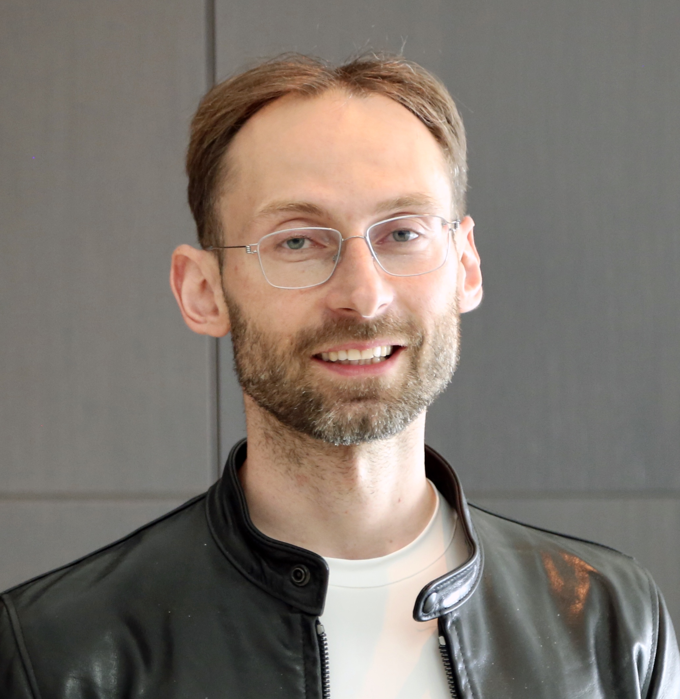
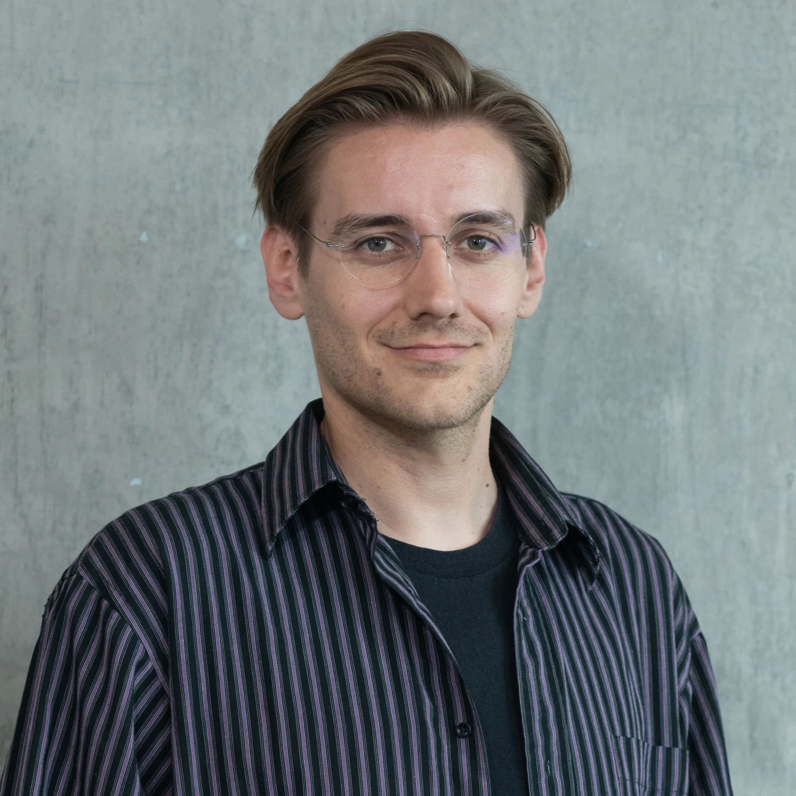

OSS Build
Modernise or extend useful bioinformatics software by repackaging legacy tools, removing brittle dependencies or improving testing and documentation.
Three days of interdisciplinary building leveraging the latest technology from OpenAI and NVIDIA inside WilbeLABS’ London laboratories.
Co-hosted by
Incredible work happens when you connect domain expertise with frontier technology. Advances in coding agents are enabling scientists who have never coded to orchestrate complex workflows and helping builders expand to new domains. This weekend is about seeing what happens when researchers, engineers, and builders work on real life sciences problems with the latest frontier models and accelerated tools.
Interdisciplinary teams will use the latest advances from OpenAI and NVIDIA for life sciences research including GPT-Rosalind and the BioNeMo Agent Toolkit. Experts from OpenAI and NVIDIA will be on-site to teach you how to use these tools and help mentor teams as they turn a real drug discovery or biology problem into a working workflow, benchmark, or prototype.
All this work will happen inside WilbeLABS’ London laboratories, including tours of the facilities to keep the scientific context close to the technical work.


Teams will work across one of four tracks, with mentors, TAs and track leads from OpenAI and NVIDIA supporting them throughout the weekend.
Modernise or extend useful bioinformatics software by repackaging legacy tools, removing brittle dependencies or improving testing and documentation.
Combine specialist models and deterministic tools into repeatable workflows with clear inputs, outputs and human decisions.
Make performance and failure modes visible on focused scientific tasks through representative tests, baselines and robustness checks.
Bring a real wet-lab, bioinformatics or data-analysis problem and build the smallest useful prototype around it.
Teams will be formed across computational and biological expertise to build and learn together.
People who work at the intersection of AI and biology, from computational biologists, AI researchers, or software engineers who are curious about biology.
Researchers and wet-lab scientists who are using coding agents to answer biological questions, leveraging experimental knowledge and real-world scientific constraints.

Founding Scientific Director, Aithyra · Google DeepMind Professor of AI, University of Oxford
Michael Bronstein is the founding Scientific Director of Aithyra, Google DeepMind Professor of AI at the University of Oxford, and Honorary Professor at TU Wien and the University of Vienna. Previously, he was a professor at Imperial College London and Head of Graph Learning Research at Twitter, with visiting appointments at Stanford, MIT, and Harvard. A pioneer in geometric deep learning and AI for protein design, Michael has authored over 200 papers, holds more than 35 patents, and has received five ERC grants. He is also a serial entrepreneur, having co-founded Fabula AI, acquired by Twitter, and Invision, acquired by Intel.

Founder & CEO, Latent Labs
Simon Kohl is a computer scientist, AI researcher, and founder of Latent Labs, a frontier AI lab developing generative models that enable biotech and pharmaceutical companies to design proteins and therapeutics. Previously, he started and co-led DeepMind’s protein design team and was a senior research scientist on the Nobel Prize-winning AlphaFold2 project. At Latent Labs, Simon is advancing generative biology through models including Latent-X and Latent-X2, designed to generate novel proteins and high-affinity antibodies with drug-like properties. The company has raised $50 million in funding, co-led by Radical Ventures and Sofinnova Partners.
Prize details will be announced soon.
This will be a 3-day event running from 18-20 September 2026. Each day will include talks, demos, and plenty of time to build.
Exact schedule to be shared ahead of the event.
Attendance is free. Space is limited, and attendees must be available for all three days.
Apply